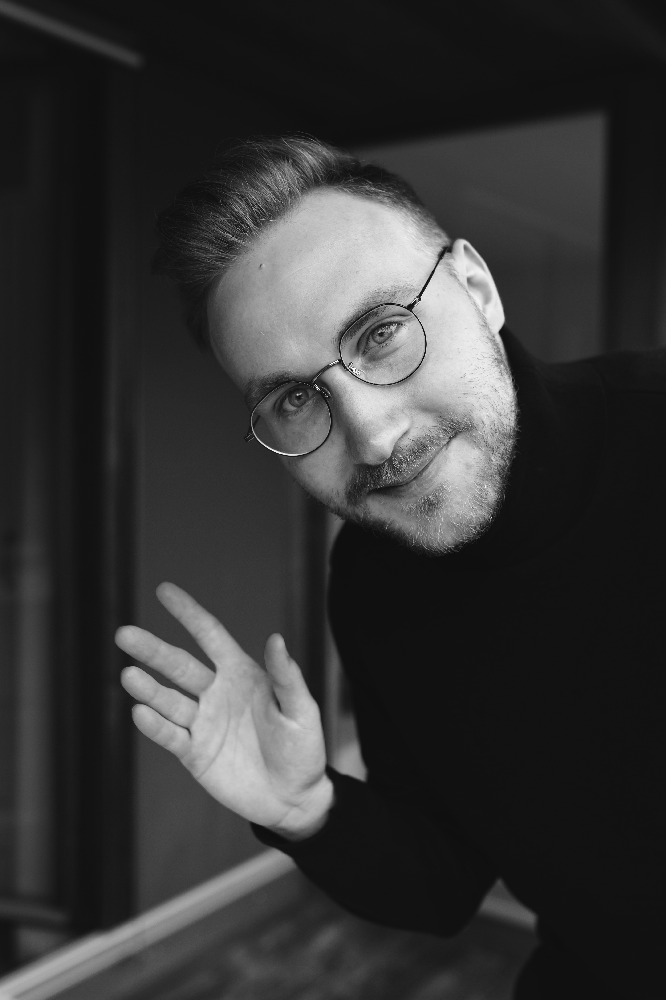

Ralph Kühnert
DevOps Dude, Cloud Architect and Weathermaker
Vienna, Austria
Hey there! I’m a Software Developer from Vienna, focussing on Cloud Native design and DevOps Ideas. I design and build elastic, scalable cloud infrastructure to serve highly-available applications on a global scale, using modern, cloud-native and predominantly open-source tech.
